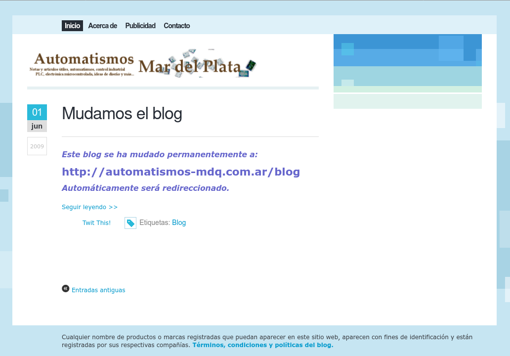

Automatismos Mar del Plata es mi blog personal donde encontrarás notas y artículos útiles sobre electrónica, microcontroladores, tecnología, robótica y mucho más.
El sitio nació como un blog en la plataforma Blogger en enero de 2008 con la intención de acercar información a estudiantes, educadores, técnicos, aficionados, profesionales y amantes de la electrónica en general.

automatismos-mdq.blogspot.com en su última etapa, antes de migrar a Wordpress.
Inicialmente, el proyecto se limitaba a la edición y redacción de contenidos técnicos centrados en la electrónica microcontrolada y automatismos en general. Sin embargo, con el tiempo evolucionó hacia una profesión más amplia, ofreciendo servicios como el diseño y desarrollo de sistemas electrónicos, la venta de componentes y la fabricación de prototipos en pequeñas series.
Logo actual, creado por DaFeBa.
Últimamente, aunque el ritmo de redacción ha disminuido considerablemente, el proyecto sigue activo, con artículos esporádicos sobre aplicaciones, pruebas o experimentos dentro del ecosistema Arduino, con una clara orientación hacia el público principiante o estudiantes.